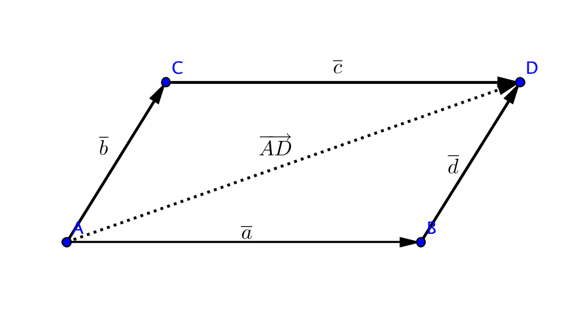
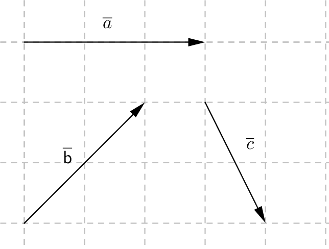
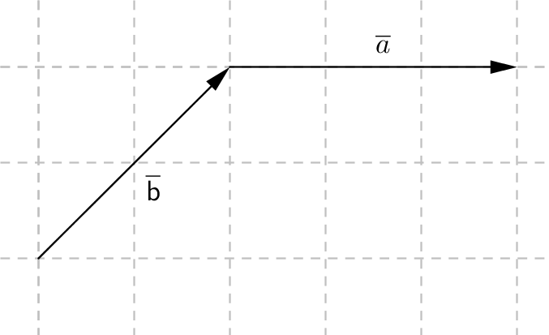
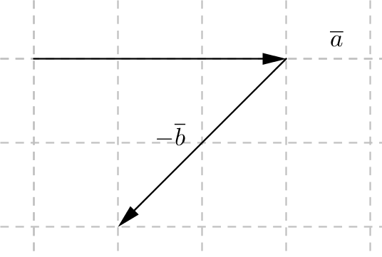
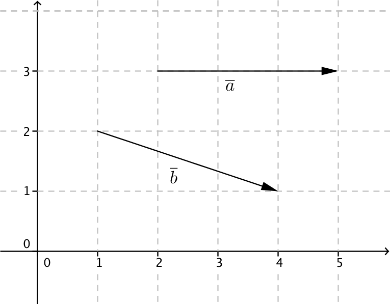

2. Summa och differens för vektorer
Summan av två vektorer räknar vi som att den vektor som vi adderar fortsätter där den första vektorn slutar. Det vi får är summavektorn.
Då vi adderar reella tal så gäller att \( (3+4)+5=3+(4+5) \). Vi talar om att addition av reella tal är associativ. Addition av vektorer har samma associativa egenskap. Det betyder att \( (\overline{a} + \overline{b}) + \overline{c} = \overline{a} + (\overline{b} + \overline{c}) \).
Då vi adderar reella tal ihop spelar ordningen ingen skillnad, 3+4=4+3. Vi talar om att addition är kommutativ. Även vektorer har samma egenskap. Det betyder att \( \overline{a} + \overline{b} = \overline{b} + \overline{a} \).
Exempel 1 Uttryck vektorn \( \overrightarrow{AD} \) med hjälp av \( \overline{a} \), \( \overline{b} \), \( \overline{c} \) och \( \overline{d} \).

Differensen av två vektorer, \( \overline{a}-\overline{b} \), tänker vi oss som subtraktion med algebra. Det betyder att \( \overline{a}-\overline{b}=\overline{a}+(-\overline{b}) \). Den vektorn som vi får är differensvektorn.
Exempel 2 Uttryck diagonalvektorn \( \overrightarrow{CB} \) i parallellogrammen \( ABCD \) med hjälp av vektorerna \( \overline{a} \) och \( \overline{b} \).

Exempel 3 Ett flygplan flyger rakt norrut med hastigheten 200 km/h. Från väster blåser en vind om 15 m/s (54 km/h).
- Mot vilken riktning flyger flygplanet?
- Bestäm flygplanets relativa hastighet jämfört med marken.
- Vartåt borde man styra för att flygplanet skall fara rakt framåt?
Uppgifter
Utnyttja dig av vektorerna \( \overline{a} \), \( \overline{b} \) och \( \overline{c} \) och rita följande:

- \( \overline{a} + \overline{b} \)

- \( \overline{b} + \overline{a} \)

- \( \overline{a} - \overline{b} \)

- \( \overline{b} - \overline{a} \)

- \( \overline{a} + \overline{b} + \overline{c} \)

- \( \overline{a} + \overline{b} - \overline{c} \)

- \( \overline{a} + \overline{b} \)
- Uttryck vektorerna \( \overline{x} \), \( \overline{y} \) och \( \overline{z} \) med hjälp av \( \overline{a} \) och \( \overline{b} \).
-
\( -\overline{a}-\overline{b} \)
-
\( \overline{a}+\overline{b} \)
-
\( -\overline{a}+\overline{b} \)
-
Bestäm längden av \( \overline{a} \), \( \overline{b} \), \( \overline{a}+\overline{b} \) och \( \overline{a}-\overline{b} \).

- \( \mid \overline{a} \mid \)
3 l.e.
- \( \mid \overline{b} \mid \)
\( \mid \overline{b} \mid= \sqrt{3^2+1^2} = \sqrt{10} \) l.e.
- \( \mid \overline{a}+\overline{b} \mid \)
\( \mid \overline{a}+\overline{b} \mid = \sqrt{(3+3)^2+1^2} = \sqrt{37} \) l.e.
- \( \mid \overline{a}-\overline{b} \mid \)
Antal steg höger/vänster, uppåt/neråt?\( \mid \overline{a}-\overline{b} \mid = \sqrt{(3-3)^2+1^2} = 1 \) l.e.
- \( \mid \overline{a} \mid \)
- Ett flygplan flyger med hastigheten 180 km/h rakt västerut. Vinden blåser med 22 m/s (80 km/h) från söder.
- Vad är flygplanets riktning?
Rita ut vektorerna och bestäm vinkeln. Vilket är vädersträcket?24,0 grader mot norr. Flygplanet rör sig mot nordväst
- Bestäm flygplanets hastighet jämfört med marken.
Bestäm längden av summavektorn.\( \sqrt{180^2 + 80^2} = 196,9771 \) km/h
- Fyrhörningen ABCD är en parallellogram och punkten O är en punkt utanför parallellogrammen. Vi betecknar \( \overrightarrow{OA}=\overline{a} \), \( \overrightarrow{OB}=\overline{b} \) och \( \overrightarrow{OC}=\overline{c} \). Uttryck med hjälp av \( \overline{a} \), \( \overline{b} \) och \( \overline{c} \).
- \( \overrightarrow{AB} \)
\( -\overline{a}+\overline{b} \)
- \( \overrightarrow{OD} \)
\( \overline{a}-\overline{b} +\overline{c} \)
- \( \overrightarrow{CD} \)
\( \overline{a}-\overline{b} \)
- \( \overrightarrow{BD} \)
\( \overline{a}-2\overline{b}+\overline{c} \)
- Rita en triangel vars sidor består av vektorerna \( \overline{a} \), \( \overline{b} \) och \( \overline{c} \). För triangeln skall gälla följande.
- \( \overline{a}+\overline{b} +\overline{c} = \overline{0} \)
till exempel:

- \( -\overline{a}+\overline{b} -\overline{c} =\overline{0} \)
till exempel:
- Ett mycket viktigt sällskap vill anlända med helikopter exakt kl 18:00 till en bjudning i Lojo. Sällskapet bestämmer att de skall starta 17:30 från Bjärnå. Lojo är 50 km rakt österut från Bjärnå. Med vilken hastighet relativt luften skall de flyga och vilken riktning skall de ha om det blåser
Vad skall deras medelhastighet vara? Hur inverkar vinden på den totala hastigheten?1 m/s = 3,6 km/h.
- 10 m/s från väster.
Vinden och färdriktningen har samma riktning, \( 36 + x = 100 \) ger \( x=64 \) km/h.
Alltså 64 km/h mot öster.
- 15 m/s från öster.
De har motvind, \( -15\cdot 3,6 + x = 100 \) ger \( x = 154 \) km/h.
Alltså 154 km/h mot öster.
- 15 m/s från söder.
Hastigheten: Vi får att \( -(15\cdot 3,6)^2 + x^2 = 100^2 \) som ger att \( x=113,65 \) km/h.
Vinkeln: \( \sin \alpha = \dfrac{15 \cdot 3,6}{100} \) ger \( \alpha = 28,4 \).
Alltså 114 km/h, 28,4o mot norr.
- En flod som är 150 meter bred strömmar med hastigheten 1,0 m/s. Vi färdas i en båt vars hastighet är 2,0 m/s.
- Vi färdas över floden så att vi siktar rakt på motstående strand. Var träffar vi motstående strand? Hur lång tid tar det att komma över?
Vi rör oss hela tiden mot stranden med 2 m/s. Tiden att komma över blir \( \dfrac{150}{2} = 75 \) s.
Under 75 s kommer floden att röra på oss 1 m/s medströms. Vi färdas 75 m nedströms.
- I starten väljer vi en riktning så att vi kommer rakt över till en brygga som finns på motstående strand. Bestäm denna riktning. Hur lång tid tar det att komma över?
Vinkeln får vi genom \( \sin \alpha = \dfrac{1}{2} \), \( \alpha = 30^{\circ} \).
Vår hastiget är \( x^2+1^2 = 2^2 \) som ger \( x=\sqrt{3} \) m/s. Tiden är \( t=\dfrac{150}{\sqrt{3}} = 86,60 \) s.
- Hur skall \( \overline{a} \) och \( \overline{b} \) vara i förhållande till varandra så att \( \mid \overline{a} \mid +\mid \overline{b} \mid = \mid \overline{a}+\overline{b} \mid \)? När gäller att \( \mid \overline{a} \mid +\mid \overline{b} \mid \not= \mid \overline{a}+\overline{b} \mid \)?
Om \( \overline{a} \) och \( \overline{b} \) är lika eller olika riktade gäller likamed, annars gäller det inte att \( \mid \overline{a} \mid +\mid \overline{b} \mid = \mid \overline{a}+\overline{b} \mid \). - Fyrhörningen ABCD är en parallellogram och punkten O är en punkt utanför parallellogrammen. Vi betecknar \( \overrightarrow{OA}=\overline{a} \), \( \overrightarrow{OB}=\overline{b} \) och \( \overrightarrow{OC}=\overline{c} \). Uttryck med hjälp av \( \overline{a} \), \( \overline{b} \) och \( \overline{c} \).
- Vad är flygplanets riktning?